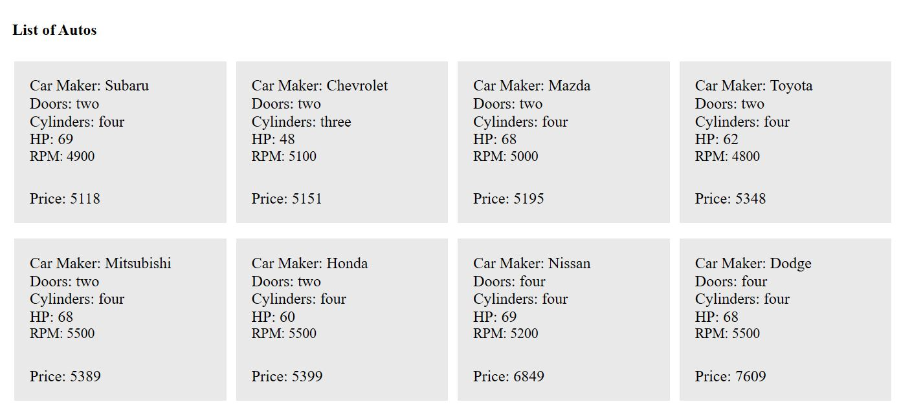

Car Maker: {{auto.maker}}
Doors: {{auto.doors}}
Cylinders: {{auto.cylinders}}
HP: {{auto.hp}}
RPM: {{auto.rpm}}
Price: {{auto.price}}
Please download the Express project from Stephen' Github https://www.github.com/, after download, under the project fold, run shell command "node index.js". This page is going to load the auto data from the Express Microservice.
Please note, both Augular and Express project run on localhost model. Below is the image of this page
